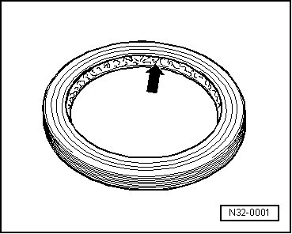

Procedures
General Repair Information
To ensure perfect and successful transmission repairs, the greatest care and cleanliness as well as the use of good and proper tools is essential. The usual basic safety precautions also apply when carrying out vehicle repairs.
A number of generally applicable instructions for individual repair operations, which are otherwise mentioned at various points in this repair information are explained here:
Transfer Case
• When installing the transfer case, ensure that the alignment pins between the transmission and transfer case are correctly positioned.
• Clean contact surfaces when repairing brackets and waxed components. Contact surfaces must be completely free of oil and grease.
• Allocate bolts and other components.
• When exchanging a transfer case, the gear oil must be filled up to lower edge of filler hole.
• Quantity in transfer case, refer to --> [ Code Letters, Transmission Allocation and Capacities ] Code Letters, Transmission Allocation and Capacities.
• When exchanging a front final drive, the gear oil must be filled up to lower edge of filler hole.
• Quantity in front final drive, refer to --> [ Code Letters, Transmission Allocation, Gear Ratios and Capacities ] Code Letters, Transmission Allocation, Gear Ratios and Capacities.
• When exchanging a rear final drive, the gear oil must be filled up to lower edge of filler hole.
• Capacity in rear final drive, refer to --> [ Code Letters, Transmission Allocation, Gear Ratios and Capacities ] Code Letters, Transmission Allocation, Gear Ratios and Capacities.
Gaskets and Seals
• Replace O-rings.
• Replace radial shaft seals.
Before Installing
Lightly lubricate the outer edge and fill the space between the sealing lips - arrow - halfway with grease (G 052 128 A1).

After Installing
• Check the transfer case gear oil level. Refer to --> [ Transfer Case Gear Oil Level, Checking ] Service and Repair.
• Check the front final drive gear oil level. Refer to --> [ Gear Oil Checking ] Gear Oil Checking.
• Check the rear final drive gear oil level. Refer to --> [ Gear Oil, Checking ] Gear Oil, Checking.
Fasteners
• Replace circlip.
• Do not overstretch circlips.
• Circlips must locate properly in the groove.
Bolts and Nuts
• Loosen and tighten the cover and housing bolts or nuts in a diagonal sequence.
• The tightening specifications stated apply to non-lubricated bolts and nuts.
• Replace self-locking bolts and nuts.
• For all hose connections, it must be checked that contact surfaces as well as bolts and nuts, if necessary, are to be waxed only after installation.
• All threaded bores in which self-locking bolts are threaded must be cleaned of remaining locking fluid using a tap. Otherwise there is danger that the bolts may shear when removed again.
Bearings
• Install needle bearings with the lettered side (thicker metal) towards the fitting tool.
Guided Fault Finding, On Board Diagnostic (OBD) and Test Instruments
• Before replacing the differential motor (V253) of the transfer case and, on vehicles with a differential lock on the rear final drive, the differential lock motor (V304), the cause of the damage can likely be determined using the vehicle diagnostic, testing and information system (VAS 5051) in the operating mode "Guided Fault Finding", "On Board Diagnostics" and "Measuring technology".